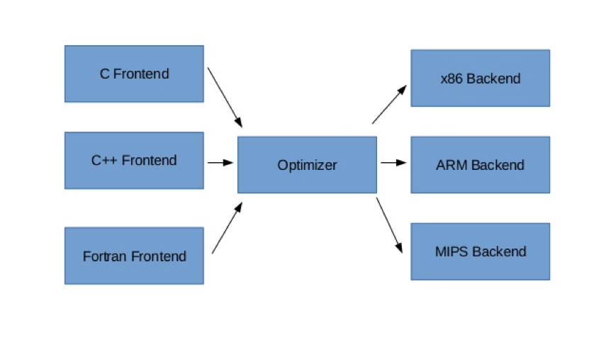

The GCC compiler is a computer program that transforms source code from a human-readable format, like the C programming language, to a machine-readable format known as assembly. This transformation is necessary because computer hardware doesn’t know how to interpret high level constructs like branching and only understands 1s and 0s.
GCC stands for GNU Compiler Collection. Thus, it is actually a collection of tools for compiling the code of various programming languages, although when we say the gcc compiler, we are referring to the compiler for the specific language we are using. It is developed and released for free by the Free Software Foundation.
Compilers consist of 3 stages: the frontend, the optimizer, and the backend. 
Compilers are very complex computer programs that turn other programs into code that the processor can execute. The three stage architecture described above allows one compiler to be used on many different processors, and for many languages. GCC is one such processor that is freely available.